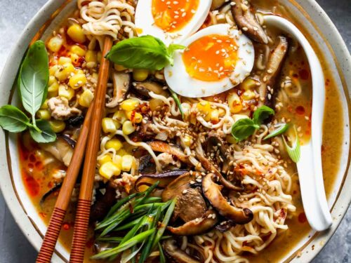

Ramen

Description
Ramen is a Japanese noodle dish. It consists of Chinese-style wheat noodles served in a broth; common flavors are soy sauce and miso, with typical toppings including sliced pork, nori, menma, and scallions. Ramen has its roots in Chinese noodle dishes
Ingredients
- 2 tablespoons vegetable oil, divided
- 1 medium onion, thinly sliced
- 3 cloves garlic, minced
- 1 tablespoon freshly grated ginger
- ½ cup rice vinegar, or to taste
- ½ cup reduced-sodium soy sauce
- 2 tablespoons oyster sauce
- 2 tablespoons mirin
- 1 tablespoon fish sauce
- 1 tablespoon Sriracha sauce
- 4 cups low-sodium chicken broth
- 1 cup water
- ¾ pound baby bok choy, quartered lengthwise
- 1 cooked chicken breast, shredded
- 3 (3 ounce) packages dried ramen noodles
- 4 eggs
- 1 jalapeño pepper, sliced, or to taste
- 2 green onions, chopped, or to taste
- ¼ cup chopped cilantro, or to taste
Steps
- Heat 1 tablespoon oil in a Dutch oven over medium-high heat. Add onion and sauté until starting to soften, about 5 minutes. Add garlic and ginger; cook about 30 seconds more. Add rice vinegar, soy sauce, oyster sauce, mirin, fish sauce, and Sriracha sauce; stir to combine. Add chicken broth and water and bring to a boil. Reduce the heat and simmer for about 5 minutes. Stir in bok choy and chicken; simmer gently until bok choy is just tender, about 2 minutes. Cover and keep warm.
- Fill a large pot with lightly salted water and bring to a rolling boil. Add ramen noodles and return to a boil. Cook, uncovered and stirring occasionally, until noodles are tender yet firm to the bite, 5 to 7 minutes. Drain noodles and drizzle with remaining 1 tablespoon oil to prevent sticking.
- While the ramen is cooking, fill a pot with enough water to cover the eggs and bring to a boil. Gently lower eggs into the boiling water and cook until yolks are barely set, about 7 minutes.
- Fill a large bowl with ice water. Transfer eggs to the ice bath to stop the cooking process; let sit about 3 minutes. Drain eggs, carefully peel away the shells, and slice in half.
- Divide ramen between four bowls. Add broth, then top with jalapeño, green onions, cilantro, and soft boiled egg halves. Serve immediately.